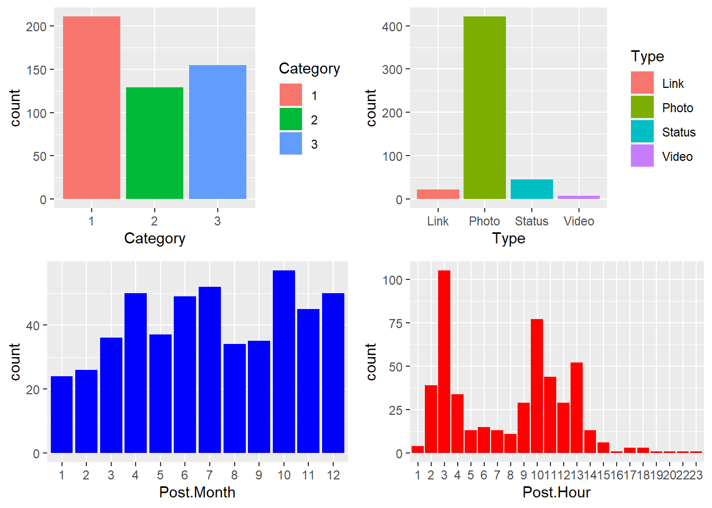

Univariate
Exploratory Data Analysis
Simple frequency and plots for categorical variables
## Category Page.total.likes Type Post.Month
## Min. :1.00 Min. : 81370 Length:500 Min. : 1.000
## 1st Qu.:1.00 1st Qu.:112676 Class :character 1st Qu.: 4.000
## Median :2.00 Median :129600 Mode :character Median : 7.000
## Mean :1.88 Mean :123194 Mean : 7.038
## 3rd Qu.:3.00 3rd Qu.:136393 3rd Qu.:10.000
## Max. :3.00 Max. :139441 Max. :12.000
##
## Post.Hour Post.Weekday Paid Lifetime.Post.Consumers
## Min. : 1.00 Min. :1.00 Min. :0.0000 Min. : 9.0
## 1st Qu.: 3.00 1st Qu.:2.00 1st Qu.:0.0000 1st Qu.: 332.5
## Median : 9.00 Median :4.00 Median :0.0000 Median : 551.5
## Mean : 7.84 Mean :4.15 Mean :0.2786 Mean : 798.8
## 3rd Qu.:11.00 3rd Qu.:6.00 3rd Qu.:1.0000 3rd Qu.: 955.5
## Max. :23.00 Max. :7.00 Max. :1.0000 Max. :11328.0
## NA's :1
## comment like share
## Min. : 0.000 Min. : 0.0 Min. : 0.00
## 1st Qu.: 1.000 1st Qu.: 56.5 1st Qu.: 10.00
## Median : 3.000 Median : 101.0 Median : 19.00
## Mean : 7.482 Mean : 177.9 Mean : 27.27
## 3rd Qu.: 7.000 3rd Qu.: 187.5 3rd Qu.: 32.25
## Max. :372.000 Max. :5172.0 Max. :790.00
## NA's :1 NA's :4library(summarytools)
freq(mydata$Category, plain.ascii = FALSE, style = "rmarkdown")Frequencies
| Freq | % Valid | % Valid Cum. | % Total | % Total Cum. | |
|---|---|---|---|---|---|
| 1 | 211 | 42.63 | 42.63 | 42.63 | 42.63 |
| 2 | 129 | 26.06 | 68.69 | 26.06 | 68.69 |
| 3 | 155 | 31.31 | 100.00 | 31.31 | 100.00 |
| <NA> | 0 | 0.00 | 100.00 | ||
| Total | 495 | 100.00 | 100.00 | 100.00 | 100.00 |
library(ggplot2)
p1<-ggplot(mydata,mapping = aes(x = Category, fill = Category))+geom_bar()
p2<-ggplot(mydata,mapping = aes(x = Type, fill = Type))+geom_bar()
p3<-ggplot(mydata, aes(Post.Month))+
geom_bar(fill = "blue")
p4<-ggplot(mydata, aes(Post.Hour))+
geom_bar(fill = "red")
grid.arrange(p1, p2,p3,p4 ,nrow = 2,ncol=2)
Some observations
Most of the posts are Category 1 () posts
Most posts are video posts followed by status posts. Not many video posts
October has the most posts
Early morning (post 12 AM) and 10 AM to 2 PM seem to be the preferred post timings
Questions arising from observing the graph above
- Do the brand engagement related variables (share,like,comment) differ based on post category, type , month,time,day of the post ?
Continuous variables
library(summarytools)
# descr is used to summarise the numerical variables in the data frame
descr(mydata,transpose = TRUE,stats = c("mean","max","sd","skewness","kurtosis"))## Non-numerical variable(s) ignored: Category, Type, Post.Month, Post.Hour, Post.Weekday, PaidDescriptive Statistics
| Mean | Max | Std.Dev | Skewness | Kurtosis | |
|---|---|---|---|---|---|
| comment | 7.56 | 372.00 | 21.27 | 11.65 | 179.31 |
| Lifetime.Post.Consumers | 804.16 | 11328.00 | 885.18 | 4.99 | 44.08 |
| like | 179.15 | 5172.00 | 324.41 | 8.88 | 116.83 |
| Page.total.likes | 123173.27 | 139441.00 | 16203.82 | -0.96 | -0.31 |
| share | 27.26 | 790.00 | 42.66 | 12.08 | 205.17 |
Histograms
p1 <- ggplot(data = mydata, mapping = aes(x = comment))+ geom_histogram(binsize = 0.5)## Warning: Ignoring unknown parameters: binsizep2 <- ggplot(data = mydata, mapping = aes(x = share))+ geom_histogram(bins = 10)
p3 <- ggplot(data = mydata, mapping = aes(x = like))+ geom_histogram(bins = 10)
p4 <- ggplot(data = mydata, mapping = aes(x = Lifetime.Post.Consumers))+ geom_histogram(bins = 10)
grid.arrange(p1, p2,p3,p4 ,nrow = 2,ncol=2)## `stat_bin()` using `bins = 30`. Pick better value with `binwidth`.#### Box Plots
b1<-ggplot(mydata, aes(x="share",y=share)) +
geom_boxplot()
b2<-ggplot(mydata, aes(x="like",y=like)) +
geom_boxplot()
b3<-ggplot(mydata, aes(x="comment",y=comment)) +
geom_boxplot()
b4<-ggplot(mydata, aes(x="Lifetime.Post.Consumers",y=Lifetime.Post.Consumers)) +
geom_boxplot()+coord_cartesian(ylim=c(0,12000))+scale_y_continuous(breaks=seq(0,12000,1000))
grid.arrange(b1, b2,b3,b4 ,nrow = 2,ncol=2)Summary
The histograms show that all the continuous variables are right-skewed.Most of the values are less than the mean val.
1.Comments:Most of the posts have received close to 0 comments or have less than hundred. There are a couple of posts which have comments more than 100. 2.All the other brand engagement metrics(share,like and Lifetime.Post.Consumers) show a similar pattern.A box plot would helps us identify the outliers. Let’s check this out next.
a22 <- ggplot(mydata, aes(x = Category, y = comment)) +
geom_boxplot()
a23 <- ggplot(mydata, aes(x = Type, y = comment)) +
geom_boxplot()
a24 <- ggplot(mydata, aes(x = Paid, y = comment)) +
geom_boxplot()
a25 <- ggplot(mydata, aes(x = Post.Hour, y = comment)) +
geom_boxplot()
grid.arrange(a22, a23,a24,a25,nrow = 2,ncol=2)Boxplots
Plot1: Category 2(offer related posts) posts have generated the outlier. Nevertheless, we can not that contest and discounts will generate more comments. This should be verified by other relevant statistical tests.e.g. ANOVA
Probability density Plots
p1 <- ggplot(data = mydata, mapping = aes(x = comment))+ geom_density()
p2 <- ggplot(data = mydata, mapping = aes(x = share))+ geom_density()
p3 <- ggplot(data = mydata, mapping = aes(x = like))+ geom_density()
p4 <- ggplot(data = mydata, mapping = aes(x = Lifetime.Post.Consumers))+ geom_density()
p5 <- ggplot(data = mydata, mapping = aes(x = Lifetime.Post.Consumers))+ geom_density(alpha=0.3)
grid.arrange(p1, p2,p5,p4 ,nrow = 2,ncol=2)